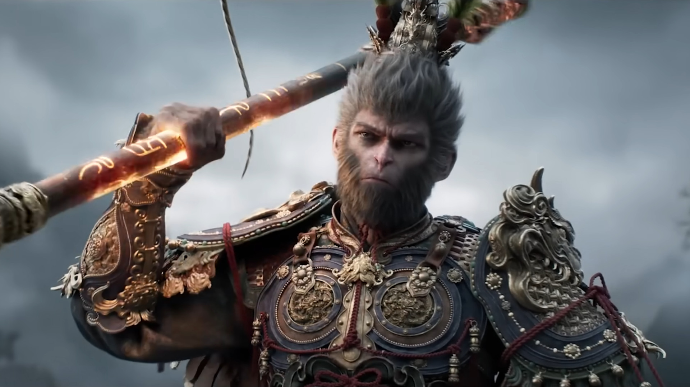
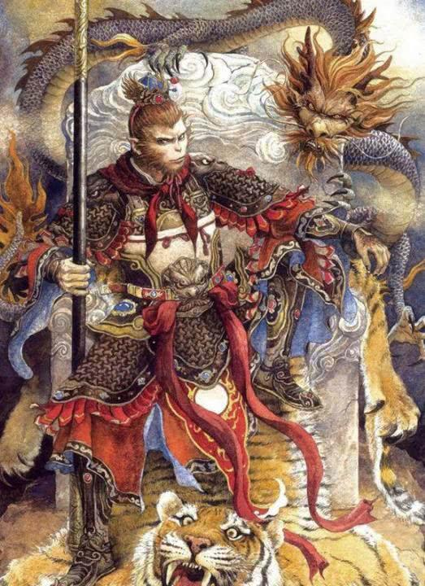

Sun WuKong
Sun WuKong, also known as the monkey king, is a mythological character from the Chinese classical novel Journey to the West. To learn more about WuKong, please visit the character page or the ability page using the navigation bar at the top.

About the Story
Written during the Ming dynasty, the story was about a monk, accompanied by his three disciples, journey to the west to retrieve the sacred Buddhist scriptures.

About the Author
Born in 1506 and died in 1582, Wu Cheng'en was a novelist and politician during the Ming dynasty.